Passes per l'obtenció de la geometria.
- Dibuixa l'estructura de Lewis per a la molècula.
- Comptar el nombre d'àtoms i parells solitaris d'electrons en l'àtom central (nombre estèric)
- Organitzeu-los de la manera que minimitzi la repulsió (el més distant possible).
- Determinar la geometria electrònica i la geometria molecular.
Exemples
\(CO_2\)
Estructura de Lewis
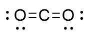
Ne (C) = 2 àtoms + 0 parells solitaris = 2. Aquest nombre cau en la primera categoria de la taula i és un tipus \(AX_2\).
Substituents i parells no compartits el més lluny possible
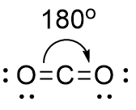
Com que no hi ha parells d'electrons sense compartir a l'àtom central la geometria electrònica i la molecular seran la mateixa. En aquest cas lineal. Angle d'enllaç \(120^0\).
Estructura de Lewis
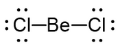
Nombre estèric
Ne (Be) = 2 àtoms + 0 parells solitaris = 2. Aquest nombre cau en la primera categoria de la taula i és un tipus \(AX_2\).
Substituents i parells no compartits el més lluny possible
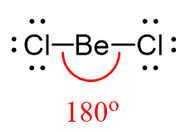
Com que no hi ha parells d'electrons sense compartir a l'àtom central la geometria electrònica i la molecular seran la mateixa. En aquest cas lineal. Angle d'enllaç \(180^0\)
\(BH_3\)
Estructura de Lewis
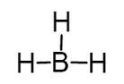
Nombre estèric
Ne (B) = 3 àtoms + 0 parells solitaris = 3. Aquest nombre cau en la primera categoria de la taula i és un tipus \(AX_3\).
Substituents i parells no compartits el més lluny possible
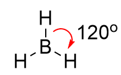
Com que no hi ha parells d'electrons sense compartir a l'àtom central la geometria electrònica i la molecular seran la mateixa. En aquest cas els hidrògens han d'estar el més allunyat possible. Obtenim una geometria plano-triangular
Estructura de Lewis
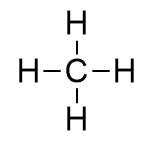
Nombre estèric
Ne (C) = 4 àtoms + 0 parells solitaris = 4. Aquest nombre cau en la categoria del tetraèdric i és un tipus \(AX_4\).
Substituents i parells no compartits el més lluny possible
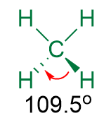
Com que no hi ha parells d'electrons sense compartir a l'àtom central, la geometria electrònica i la molecular seran la mateixa. En aquest cas els hidrògens han d'estar el més allunyat possible. Obtenim una geometria tetraèdrica amb un angle d'enllaç de \(109.5^0\).
\(H_2SO_4\)
Estructura de Lewis
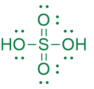
Nombre estèric
Ne (S) = 4 àtoms + 0 parells solitaris = 4. Aquest nombre cau en la categoria del tetraèdric i és un tipus \(AX_4\).
Substituents i parells no compartits el més lluny possible
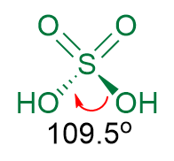
Com que no hi ha parells d'electrons sense compartir a l'àtom central la geometria electrònica i la molecular seran la mateixa. En aquest cas els hidroxils han d'estar el més allunyat possible. Obtenim una geometria tetraèdrica amb un angle d'enllaç de \(109.5^0\).
\(NH_3\)
Estructura de Lewis
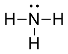
Nombre estèric
Ne (N) = 3 àtoms + 1 parell no compartit= 4. Es tracta d'un tipus \(AX_3\).
Substituents i parells no compartits el més lluny possible
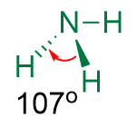
S'espera que els angles, inclòs el parell no compartit, sigui de \(109.5^0\), però, com que la repulsió del parell no compartit és més forta, l'angle entre els hidrogens ha de ser més petit del presit amb anterioritat i és comprova que aproximadament \(107^0\) . Aquesta distribució geomètrica s'anomena piràmide trigonal.
\(H_2O\)
Estructura de Lewis
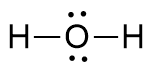
Nombre estèric
Ne (O) = 2 àtoms + 2 parells no compartits= 4. Es tracta d'un tipus \(AX_2E_2\).
Substituents i parells no compartits el més lluny possible
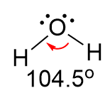
S'espera que els angles, inclòs els parells no compartits, siguin de \(109.5^0\), però, com que la repulsió dels parells no compartits és més forta que la repulsió entre electrons d'enllaç, l'angle entre els hidrogens ha de ser més petit del predit amb anterioritat i és comprova que aproximadament \(104.5^0\) . Aquesta distribució geomètrica s'anomena angular.
\(PCl_3\)
Estructura de Lewis
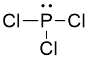
Nombre estèric
Ne (P) = 3 àtoms + 1 parell no compartits= 4. Es tracta d'un tipus \(AX_3E\).
Substituents i parells no compartits el més lluny possible
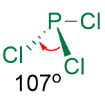
Pràcticament idèntic al cas del \(NH_3\) s'espera que els angles, inclòs el parell no compartit, siguin de \(109.5^0\), però, com que la repulsió dels electrons no compartits és més forta que la repulsió entre electrons d'enllaç, l'angle entre els clors ha de ser més petit del predit amb anterioritat i és comprova que aproximadament \(109.5^0\) . Aquesta distribució geomètrica s'anomena piràmide trigonal.